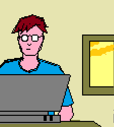
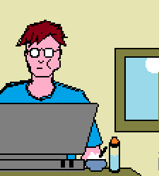
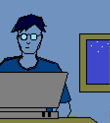
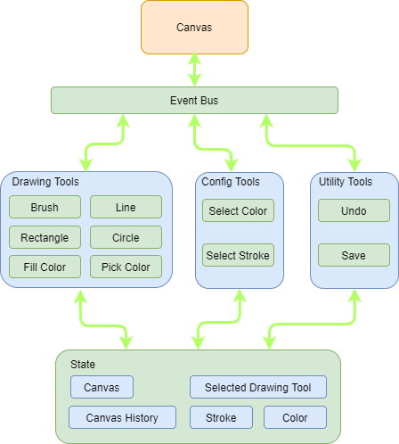
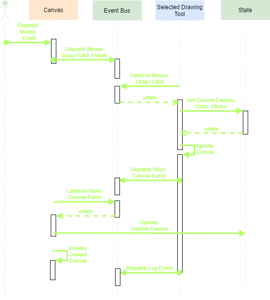

M for Mesmerize. This phone will mesmerize you!
I wish the above was true. In reality, M for Mock. This segment mocks up a smart phone architecture. I was reading up a bit on Android architecture and the way it's thought out is really an eye opener. Long story Short - layer it up.
Applications
Application Framework
Android Runtime / Platform Libraries
Linux Kernel
Inspiration Juices!! Here I have apps (Calendar, MesTube, Anim Quotes, MesPaint) which is built on the Framework (extends PhoneApp). They utilize the Runtime / Libraries (Phone Services) to run. The app gets a handle to the view port to render on the screen - gets access to few basic services (memory, event bus, a loading screen and message flash modal).
To use the event bus, the apps register events and dispatch events. As a demo, Calendar and MesTube (and the phone) are registered to listen to the Notify event. On notification of this event, if on the Home page or running the listening apps, a message will be flashed. Click on below button to dispatch Notify.
Notify Apps
The Apps Here
First a simple app. A useless calendar which displays the current month and highlights today. Doesn't even let you navigate to different months / years.
Not YouTube, but MesTube. This will mess up your conception about YouTube.
Time to complicate things up. A lot of effort went into this. Has navigation to the viewer page from list page and back (←). Uses phone services to flash info on the viewer page when ? is clicked. The animations took a lot of time to arrange.
A word play on Anim Quotes
Simplest of the lot. Calls Animquotes to get a quote and flash it on the screen using the phone service. The loading screen is put to use here while the rest call is made. No UI elements here!
MesPaint App
This app needed a section of its own.
Yup, it's a hat tip towards the first ever digital paint program anybody has used. This was where I used the services - memory and event bus extensively. The tools for drawing, we all know them so I won't explain here - test them out.
Artwork created on MesPaint.



The core architecture is Event Based along with State Management.

The below sequence shows the flow when a user starts drawing on the canvas. The flow is the same for all drawing tools except Color Picker. That updates the color in the state rather than the canvas.

When Log Event is dispatched, the listener updates Canvas History in the store. This history is required for the Undo Tool flow.
Eloquent JavaScript has a project which gave the algorithms for the tools. I improvised on them a bit.
Animchan for Quotes.